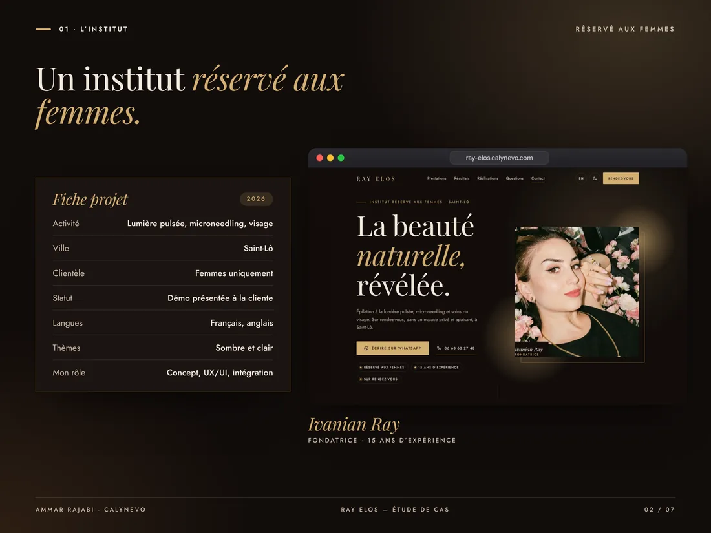
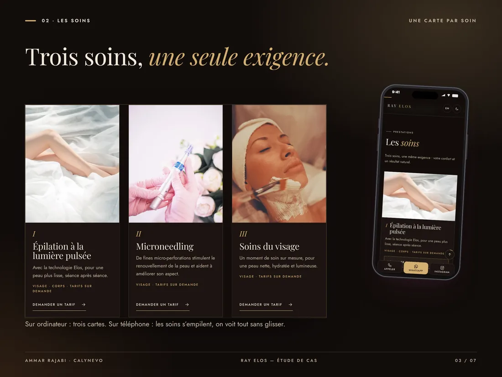
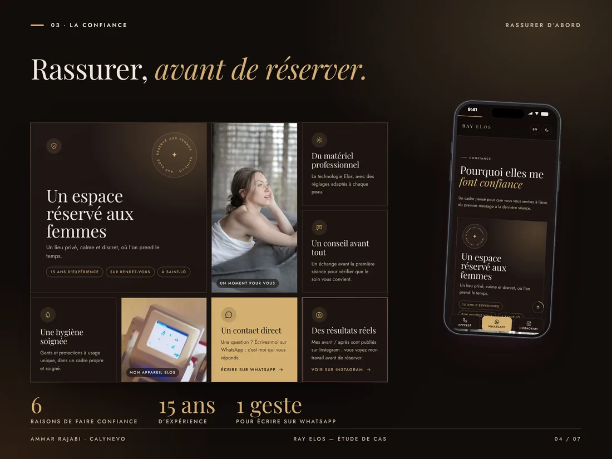
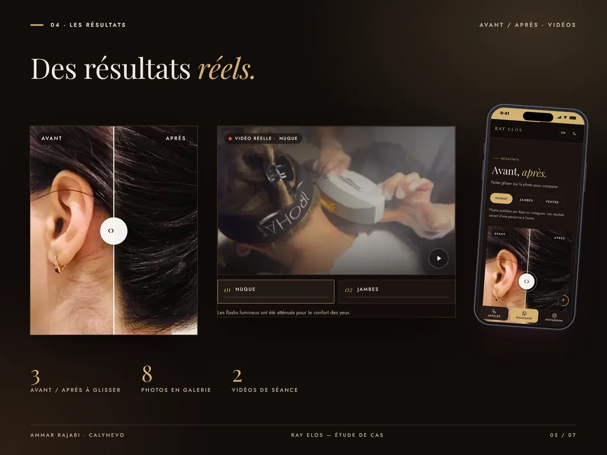
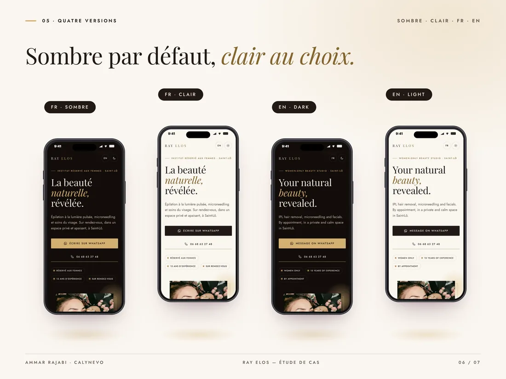
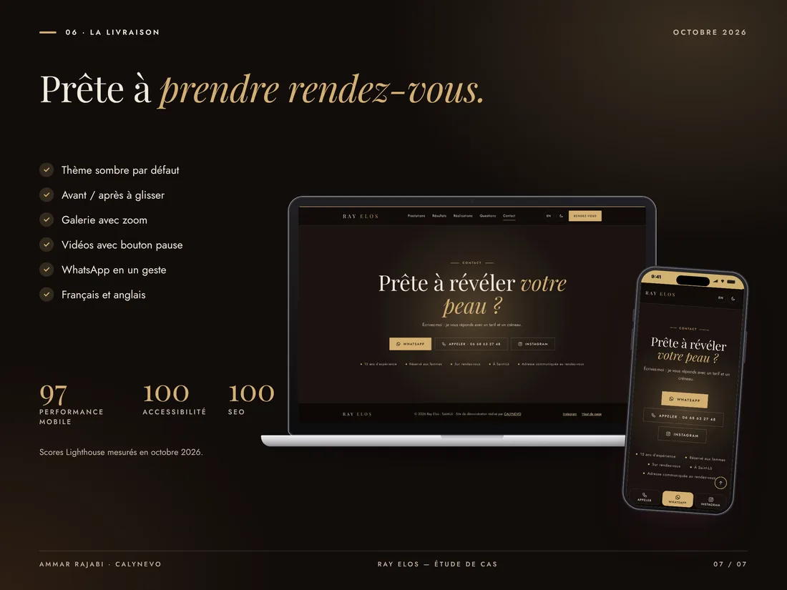

Ray Elos
A women-only beauty studio: reassure first, show the results, then message on WhatsApp.

In 30 seconds · Presented demo
- The need
Reassure women and get them to message for a booking.
- What I did
Treatments, trust, before / after, videos, gallery, questions.
- The result
Demo presented to the client, who is thinking it over. Lighthouse in the green.
Key numbers
- 3before / after sliders
- 8photos in the gallery
- 2session videos
- FR+ENdark and light
The goal
Reassure women and get them to message for a booking.
The work
Treatments, trust, before / after, videos, gallery, questions.
My role
- UX/UI, front-end build, translation, local SEO.
- One page · FR and EN · dark and light.
- HTML, CSS, JavaScript · o2switch.
Dark and gold
A dark theme by default, for a soft premium feel.
Trust first
Women-only space, advice, hygiene and direct contact.
Real proof
Raya’s before / after and videos, light flashes softened.
01 / 06
The studio
Women only, in Saint-Lô.

The studio
02 / 06
Treatments
One card per treatment, price on request.

Treatments
03 / 06
Trust
Six reasons to trust, in a grid.

Trust
04 / 06
Results
Before / after sliders and session videos.

Results
05 / 06
Four versions
Dark, light, French and English.

Four versions
06 / 06
Delivery
What was delivered, and the scores.

Delivery
A demo, presented to the client
I made this site for free and presented it to Raya, who is thinking it over. It will be removed on simple request.

Contact
A role, a project or a simple question?
I reply in English or French, usually within 48 hours.